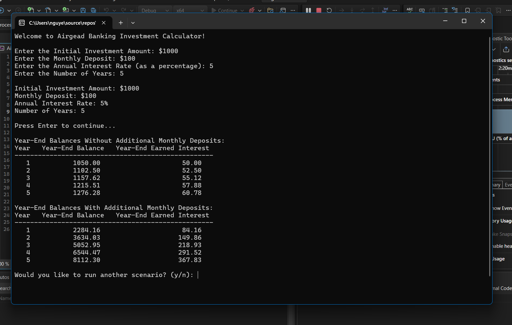
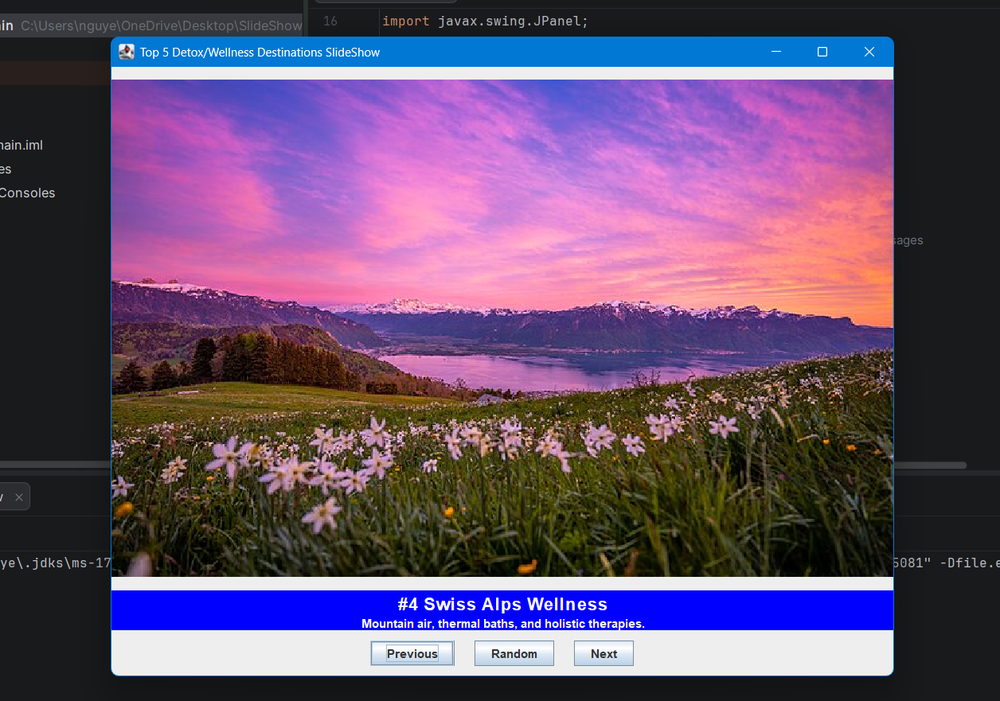
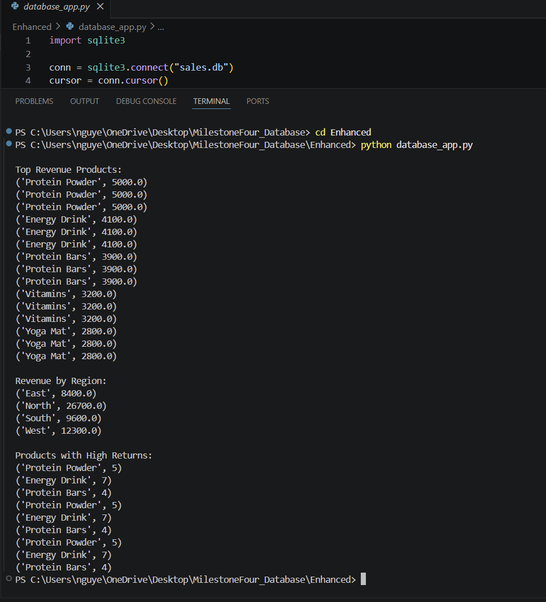

Welcome to my Computer Science Capstone ePortfolio for CS 499 at Southern New Hampshire University. This portfolio highlights my growth throughout the program in software engineering and design, algorithms and data structures, and databases through a code review, original and enhanced artifacts, artifact narratives, and a professional self-assessment.
This section introduces my portfolio as a whole and reflects on how the Computer Science program helped me develop technical skills, problem-solving ability, and a stronger understanding of software design, algorithms, databases, communication, and security. It also explains how my artifacts connect together and demonstrate my overall growth throughout the program.
My code review video serves as the foundation for the enhancements in this portfolio. In the review, I walked through the original versions of my artifacts, explained how the code functioned, identified weaknesses and areas for improvement, and described the specific enhancements I planned to make. This step was important because it showed my ability to analyze code critically and communicate technical ideas in a way that would make sense to peers, instructors, or stakeholders.
The review also helped demonstrate collaboration and decision-making skills because it framed the enhancement process the way a real code review would in a professional environment. Instead of jumping directly into modifications, I first evaluated the structure, logic, scalability, and overall quality of each project.
This artifact is a C++ application that calculates compound interest over time using user-provided values such as initial investment amount, monthly deposit, annual interest rate, and number of years. I selected this artifact because it demonstrates object-oriented programming, modular structure, and the ability to apply programming logic to a practical financial problem.
In the original version, the program worked correctly but had several limitations. It did not validate user input, it only allowed one calculation per run, and the program flow could be improved. For the enhancement, I added input validation, improved the overall user experience by allowing multiple scenarios to be run in one session, and made the program feel more polished and more reliable.

This artifact is a Java Swing slideshow application that presents wellness travel destinations using images and text descriptions. I selected this artifact because it gave me the opportunity to improve how data was stored, accessed, and managed inside the program.
In the original version, the slideshow relied on repeated if and else if statements to decide
which image and description to display. While this worked for a small project, it was not efficient or scalable.
For the enhancement, I created a Slide object and stored the slides in an ArrayList.
This allowed the program to manage slide data dynamically, reduced repeated logic, improved scalability,
and strengthened the navigation structure. I also added a random button, which made the program more interactive.

This artifact began as a DAD 220 assignment focused on analyzing sales and returns data using database queries and interpreting the results in a written format. I selected this artifact because it provided a strong foundation in database thinking, but also left room to grow into something more practical and implementation-based.
In the enhanced version, I created a Python application that connects to a SQLite database, creates a table, inserts data, and runs SQL queries to produce useful results. This enhancement turned a written analysis into a functioning database-driven application. It demonstrates database design, query construction, integration between Python and SQLite, and the ability to move from theory to implementation.
